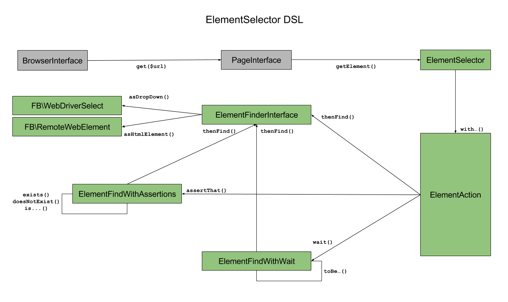

PHP Fluent WebDriver Client


A fluent DSL for writing browser tests.
Table of Contents
- Installation
- External requirements
- Usage
- Visual representation of the DSL
- Facebook WebDriver dependency
- API docs
- Contributing
- Versioning
- License
Installation
The recommended way of installing it is by using Composer:
$ composer require athena-oss/php-fluent-webdriver-client:dev-master
External requirements
The library is meant to be used alongside Selenium, which is in charge of wrapping different browser vendors behind a unified WebDriver spec. In order to be able to run the code samples contained in this document you'll need to download and run Selenium locally. For running the code examples you'll additionally need to install PhantomJS.
Usage
The library attempts to reduce the boilerplate code needed to write browser tests by providing an opinionated DSL. The DSL allows for two distinct patterns of tests:
- Synchronous assertions
- Asynchronous assertions
Synchronous assertions
Synchronous assertions are those expressed with the following pattern:
- Fetch URL
- Convert fetched HTML document into a Page Object
- Find an element by custom selector
- Assert that the element is enabled/selected/visible etc.
- (Optionally) Perform action on element (click, clear, submit)
Sample:
namespace OLX\SampleWebDriver\Tests;
use OLX\FluentWebDriverClient\Browser\Browser;
use OLX\FluentWebDriverClient\Browser\BrowserDriverBuilder;
class WikipediaBrowserTest extends \PHPUnit_Framework_TestCase
{
public function testArticlePage_RegularArticleInEnglish_ShouldDisplayArticleTitleAsHeader()
{
$driver = (new BrowserDriverBuilder('http://localhost:4444/wd/hub'))
->withType('phantomjs')
->build();
$browser = new Browser($driver);
$browser->get('https://en.wikipedia.org/wiki/Athena')
->getElement()
->withCss('h1#firstHeading')
->assertThat()
->isHidden()
->thenFind()
->asHtmlElement();
}
}
Running the above test would fail (an Exception is thrown), as an element matching the given CSS exists in the DOM and is visible.
Asynchronous assertions
Synchronous assertions are those expressed with the following pattern:
- Fetch URL
- Convert fetched HTML document into a Page Object
- Find an element by custom selector
- Wait for a condition on the element (a timeout means the assertion failed)
- (Optionally) Perform action on element (click, clear, submit)
Sample:
namespace OLX\SampleWebDriver\Tests;
use OLX\FluentWebDriverClient\Browser\Browser;
use OLX\FluentWebDriverClient\Browser\BrowserDriverBuilder;
class WikipediaBrowserTest extends \PHPUnit_Framework_TestCase
{
public function testArticlePage_RegularArticleInEnglish_ShouldDisplaySpecialHeaderAfter3Seconds()
{
$driver = (new BrowserDriverBuilder('http://localhost:4444/wd/hub'))
->withType('phantomjs')
->build();
$browser = new Browser($driver);
$browser->get('https://en.wikipedia.org/wiki/Athena')
->getElement()
->withCss('h1#specialHeading')
->wait(3)
->toBeVisible()
->thenFind()
->asHtmlElement();
}
}
Running the above test would fail (an Exception is thrown), as an element matching the given CSS doesn't exist in the DOM 3 seconds after the DOM was ready.
Visual representation of the DSL
The diagram bellow illustrates the methods that can be called in each state of the call chain. A few key points:
- The names inside each rectangle, when not prefixed, correspond to interfaces and classes in the library
- The FB prefix corresponds to the Facebook PHP WebDriver package

Facebook WebDriver dependency
The Facebook PHP WebDriver is the underlying implementation of all communication between the library and the Selenium HTTP API. At its current state, the DSL can't hide away the Facebook implementation completely. Therefore it is recommended that you read their documentation in case you're using any of the DSL methods which return a Facebook type.
Replacing the Facebook implementation by our own Selenium API abstraction is currently not among one of the project top priorities, but it's an improvement we're considering implementing (as a major, backward-incompatible version).
API docs
An API documentation is provided.
Contributing
Checkout our guidelines on how to contribute in CONTRIBUTING.
Versioning
Releases are managed using github's release feature. We use Semantic Versioning for all the releases. Every change made to the code base will be referred to in the release notes (except for cleanups and refactorings).
License
Licensed under the Apache License Version 2.0 (APLv2).